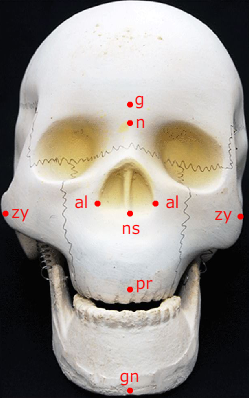
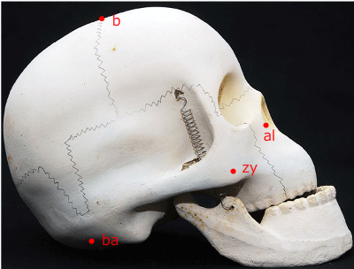
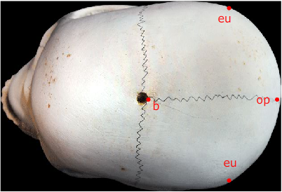

Calculation of Indices
CRANIOMETRY
Craniometry is concerned with the technique of measurement on the cranium and face of the skeleton. Craniometry includes measurement of different types, for example liner, angular, depth, volume, arc, etc. and hence, different types of instrument are needed to take different types of measurements. Some measurement are taken directly taken on the skull, while others are measured on the tracking of the skull. Direct measurements are taken allowing the skull to rest on a pad or by mounting it on a craniphore. Tracing is done with help of a set of instruments designed for the purpose.
Cranial landmark are well defined and are easier to locate in comparison to those used in somatometry. As in somatometry, in Craniometry also it is always necessary to have full knowledge about the landmarks, to locate them accurately, and then to take the measurement correctly following the standard technique.
In times of measuring a skull record should be kept as regards its identification (skulls preserved in Museum and laboratory are appropriately numbered and that must be noted) as well as the date and the place of taking measurement along with the investigator‘s name.
In order to take measurement, more particular measurement, the skulls must be oriented on a fixed plane, which must be well defined and accepted by all workers.One of this plane is the FRANKFURT HORIZONATL (F.H) PLANE. This is an internationally accepted standard procedure. When the right and left porion (the deepest point on the upper margin of the external auditory meatus) and the orbital, preferably the left one, if not the two (the deepest on the inferior margin if the orbit ) of the skull are on the same horizontal plane, it is said to be on the Frankfurt horizontal plane. This plane is used as a constant plane in measuring and describing a skull.
Another plane known as NASION-INION PLANE is used to take a few angular measurements. When the nasion and inion are on the same horizontal plane, it is called nasion-inion plane.
Numerous measurements and indices have been proposed by different scholars. Here, however a limited number of those have been included.
The shape and size of the skull of man and his near relatives, the primates – both living and extinct – can be obtained by Craniometry. The values thus obtained can be fruitfully and meaningfully compared. This sort of study comparatively anatomy helps to establish the phylogenic relationship among them and thereby to learn about the evolutionary trends in man and primates. The correlations among the different parts of the skull can be established through Craniometry , and such the missing portions of a skull can be reconstructed . Moreover a skull can be reconstructed from the available measurements of the skull even if it destroyed or lost.
INSTRUMENTS
Spreading Caliper (of Martin):
The spreading caliper consists of two long arms, the upper half of which are curved outwards, while the ends of the other half are screwed together in such a manner so that the free parts of the arms can be moved freely. One end of a straight scale is fixed at the middle of one the arms keeping the other end free. The scale passes through asocket fixed on the other arm. The free ends of the two long arms are provided either with small knob- like structures or with pointed ends. The first type is used for taking measurements on the body, while the second type is used for measurements on the skeleton. The scale is graduated proportionately to the distances between the two freeends of curved arms. This instrument is used for taking such measurements on head, face, etc., wherecurved areas are involved. The spreading calipers are of two sizes. The larger one is called Pelvimeter, which is commonly used for taking measurements on the pelvic region.
Sliding Caliper (of Martin):
The sliding caliper consists of a long straight scale graduated on both the sides and two cross bars. One of the crossbars is fixed at one end of the scale, while the other parallel to the first one can be slided over the scale with the help of a socket provided with ascrew to be used to fix the socket at any place. Each crossbar has two ends, of whichone is blunt, and the other is sharp and pointed. The blunt and the sharp ends are usedfor taking measurements on the body and the respectively.The scale is graduated starting from the fixed end upto 200 mm. Again, from the free end also it is graduated upto 50 mm. The second graduation is used while taking certain depth measurements, when the movable socket is fitted on the scale in the reverse order.
Measurements of the Cranium
|  |  |  |
| fig1. Landmarks on Norma Frontalis | fig2. Landmarks on Norma Lateralis | fig3. Landmarks on Norma Verticals |
Maximum Cranial Length (g-op): The straight distance from the glabella to the opisthocranion. Glabella (g) is the most prominent point between the two superaorbital ridges above the fronto-nasal suture in the mid-sagittal plane. Opisthocranion (op) is the most posterior point from the glabella in the mid-sagittal plane, excluding the inion. Instrument used: Spreading Caliper.
Maximum Cranial Breadth (eu-eu): The straight distance between the two euryon points. Euryon (eu) is the most lateral point on the skull, which can only be determained by measuring the maximum cranial breadth, as it is variable. Instrument used: Spreading Caliper.
Basion-Bregma or Basilo-Bregmatic Height (ba-b): The straight distance from the basion to bregma. Basion (ba) is the lowest point on the external surface of the anterior margin of foramen magnum in the mid-sagittal plane. Bregma (b) is the meeting point of the sagittal and coronal sutures. Instrument used: Sliding Caliper.
Upper Facial Height (n-pr): The straight distance from the nasion (n) to prosthion (pr). Nasion (n) is the meeting point of the fronto-nasal and inter-nasal sutures. If this junction is not in the mid-sagittal plane, then the mid-sagittal plane of the fronto-nasal suture is taken as the nasion. Prosthion (pr) is the lowest point of the intermaxillary suture on the alveolar border between the two middle incisors. Instrument used: Sliding Caliper.
Nasal Breadth (al-al): The maximum breadth between the two lateral margins of the nasal apertures. Instrument used: Sliding Caliper.
Nasal Height (n-ns): The straight distance from the nasion to nasospinale. Nasospinale (ns) is the point where a line touching the lower margin of the nasal aperture crosses the mid-sagittal plane Instrument used: Sliding Caliper.
Bizygometic Breadth (zy-zy): The straight distance from one zygion to the other.Zygion (zy) is the most lateral point of the zygomatic arch. Instrument used: Sliding Caliper.
Indices
As in the case of head of a person, in the case of the skull also many indices can be calculated obtain the relationship between two absolute measurements. Here, however mention of a few important indices with their respective formulae and classification will be made.
1.Cranial Index
|
Classes |
Ranges (According to Garson) |
|
Ultradolichocranial |
-64.9 |
|
Hyperdolichocranial |
65.0 – 69.9 |
|
Dolichocraniual |
70.0 – 74.9 |
|
Mesocranial |
75.0 – 79.9 |
|
Brachycranial |
80.0 – 84.9 |
|
Hyperbrachycranial |
85.0 – 89.9 |
|
Ultrabrachycranial |
90.0 + |
|
Classes |
Ranges(according to Martin and Saller) |
|
Chamaecrianial |
- 69.9 |
|
Orthocranial |
70.0 – 74.9 |
|
Hypsicranial |
75.0 + |
|
Classes |
Ranges(according to Martin and Saller) |
|
Tapeinocranial |
-91.9 |
|
Metriocranial |
92.0 – 97.9 |
|
Acrocranial |
98.0 + |
|
Classes |
Ranges(according to Martin and Saller) |
|
Hypereuryne |
-44.9 |
|
Euryene |
45.0 – 49.9 |
|
Mesene |
50.0 – 54.9 |
|
Lepetene |
55.0 – 59.9 |
|
Hyperleptene |
60.0 + |
|
Classes |
Ranges(according to Martin and Saller) |
|
Chamaerrhine Platyrrhine |
-46.9 |
|
Leptorrhine |
47.0 – 50.9 |
|
Mesorrhine |
51.0-57.9 |
|
Hyperchamaerrhine/Hyperplatyrrhine |
58.0+ |